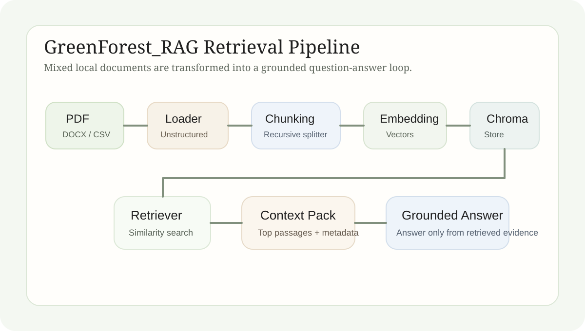

GreenForest_RAG：项目简报
本文介绍 GreenForest_RAG 的任务对象、检索增强链路、当前 demo 的实现范围，以及这个小型垂直知识库已经证明的工程结论。
Project Article
GreenForest_RAG 把园艺与项目运营资料整理为一个可检索的本地知识库。当前重点不是做复杂界面，而是先把“资料导入、索引构建、检索召回、基于证据回答”这条主链路跑通。
1. 主题
GreenForest_RAG 是一个面向垂直资料调用的 RAG 原型。它处理的对象不是开放网页，而是围绕“萃意生机”生态阳台项目积累下来的本地文档。资料本身既有植物知识，也有商业和运营信息，因此更接近真实项目中的混合知识环境。
本文关注的不是某一个模型参数，而是一个小型知识库如何从“文件堆”变成“可检索、可引用、可回答”的工程对象。换句话说，GreenForest_RAG 讨论的是知识组织方式，而不只是生成结果。

2. 原理
这个项目的原理并不复杂，但对象很明确。RAG 的关键不是“让模型更会说”，而是“让回答建立在可取回的证据上”。对于资料分散、格式混杂的项目环境，这种组织方式比直接聊天更可靠，也比依赖人工翻找文件更高效。
因此，GreenForest_RAG 的方法逻辑分成四步。第一步是把不同格式的本地资料读成统一文档对象。第二步是把长文本切成适合检索的语义片段。第三步是将这些片段转成向量并持久化存储。第四步是在用户提问时先检索，再要求模型只依据召回内容回答。
这个 demo 目前解决的是“知识是否能够被可靠召回”。它还不是完整部署系统，也没有覆盖权限管理、网页界面、批量更新调度或线上服务监控等产品层问题。
3. 实现
当前实现使用 LangChain UnstructuredLoader 读取本地 PDF、DOCX 和 CSV 资料，用 RecursiveCharacterTextSplitter 做文本切分，再通过兼容 OpenAI 接口的 embedding 配置生成向量表示。模型和接口参数已经被迁移到环境变量中，以降低脚本对固定环境的耦合。
向量存储使用 Chroma，目的是让知识库可以构建一次、重复调用。运行 `RAG.py` 时，系统会完成文档扫描、加载、切分、向量化与持久化；运行 `ask.py` 时，则会在已有索引上进入命令行问答循环。
问答阶段的关键约束是“先检索，再回答”。召回器会先选出最相关的若干文本片段，连同 metadata 一起组织成上下文，再送入聊天模型。如果当前资料不能支撑回答，提示词会优先要求系统承认不知道，而不是补全未经证实的信息。
导入层
重点解决混合格式资料的统一读取问题，让本地项目文档先进入同一种处理接口。
索引层
文本切分、向量生成与 Chroma 持久化共同构成最小知识底座。
问答层
问题先走召回，再把证据片段和问题一起交给模型，减少无依据生成。
4. Demo 结果
当前 demo 已经完整跑通了“本地资料导入到 grounded answer”的链路。它能够把原本散落在手册、计划书、表格和会议记录中的内容重新组织为可检索知识，并在用户提问时快速返回相关片段。
对这个项目而言，最关键的观察不是回答是否华丽，而是回答是否能回到资料本身。只要检索片段是可追溯的，后续就可以继续优化切块策略、metadata 组织、召回参数和问答提示词。这个 demo 因而已经具备明确的迭代对象。
召回优先
系统先找证据，再生成回答。回答质量因此与索引质量直接绑定。
本地持久化
Chroma 让知识库不必每次重建，适合对同一批资料持续提问和迭代。
可继续优化
文档质量、切块策略、metadata 和 top-k 参数都已经成为可测量、可调整的变量。
5. 结论
GreenForest_RAG 已经证明，一个小型垂直知识库完全可以通过 RAG 被改造成稳定的知识调用系统。当前项目最重要的结果不是界面完成度，而是“可追溯回答”这件事已经在工程上成立。
这意味着后续工作可以从可靠底座继续扩展，而不必再回到“资料散落在文件夹里、调用主要靠人工记忆”的状态。对真实项目而言，这种知识重组能力本身就是价值。